In the beginning,
God
created
the Heavens
and the
Earth.
God
created
the Heavens
and the
Earth.
He made the earth,
and He made a sun for it to go around,
and then He kicked the earth and every time the spot He kicked faced the sun...
and He made a sun for it to go around,
and then He kicked the earth and every time the spot He kicked faced the sun...

God make tiny little ribbons of energy,
and then He wove those together
into elementary particles.
He stacked up the particles into atoms,
and then stuck those atoms
into clumps until
they made everything
else.
and then He wove those together
into elementary particles.
He stacked up the particles into atoms,
and then stuck those atoms
into clumps until
they made everything
else.

He decided what time was, what light was, what gravity was, what perception was, and He made humans a little bit lower than the angels, which where a lot lower than He was.


Then, on the seventh day,
God sat back and saw
that it was
good.
God sat back and saw
that it was
good.

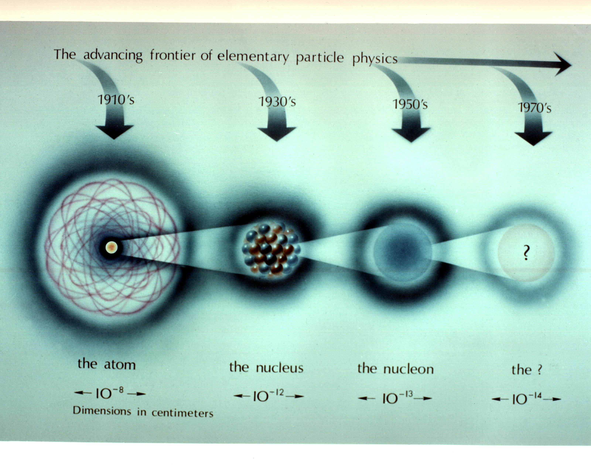


Suddenly, everything began to
rumble.
rumble.

God sat up straight
in his throne, his eyes wide,
and just as His mouth opened up a bit to speak, everything exploded.
(hover please)
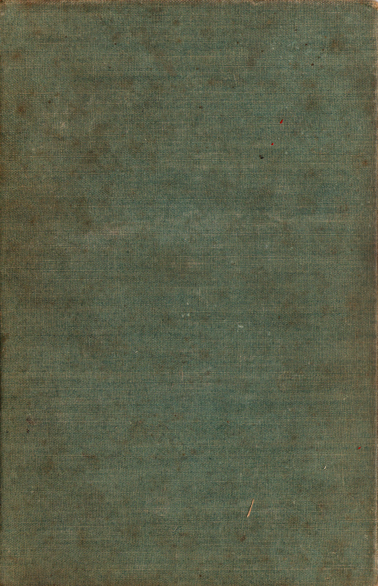
The earth and sun exploded, and the atoms exploded, and even the elementary particles exploded as all the ribbons of energy unwound and went sailing away in all directions at the speed of light. And God exploded.
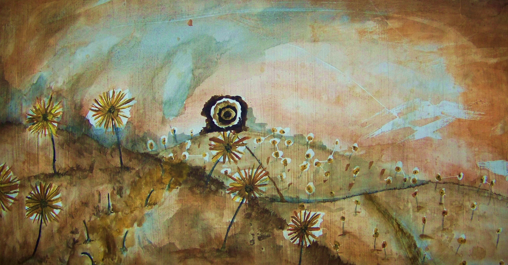
But God can’t explode.
And so, it turned out
that God wasn’t God
at all. He was just
a god.
that God wasn’t God
at all. He was just
a god.


The real God had just set off a big bang. S/He was about to create everything. It was the beginning again.

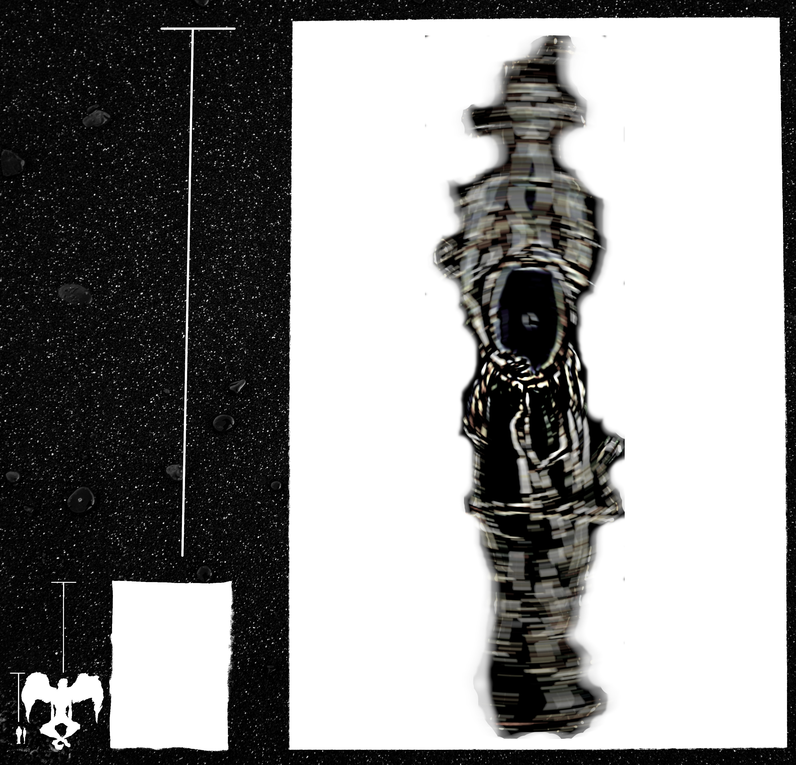
How could the first god have not seen God,
or known that S/He existed?
or known that S/He existed?
Well, it turns out that just as the first god made humans a little lower than the angels, and the angels a lot lower than himself, god was also a lot smaller than something…
...God.
...God.
God, when S/He exploded all the energy ribbons in the universe, did not really notice the first god, like a child building a sand castle on top of an anthill. An infinite sandcastle.

So, this was the true beginning. In the beginning, God created the heavens and the earth.
S/He tore out an eyeball
and called it the sun.
S/He spat at the sun, and the spittle spun in circles around it, and every time it came back to Them God called it a year. After seven years, God sat down on the throne to look at what S/He had made.
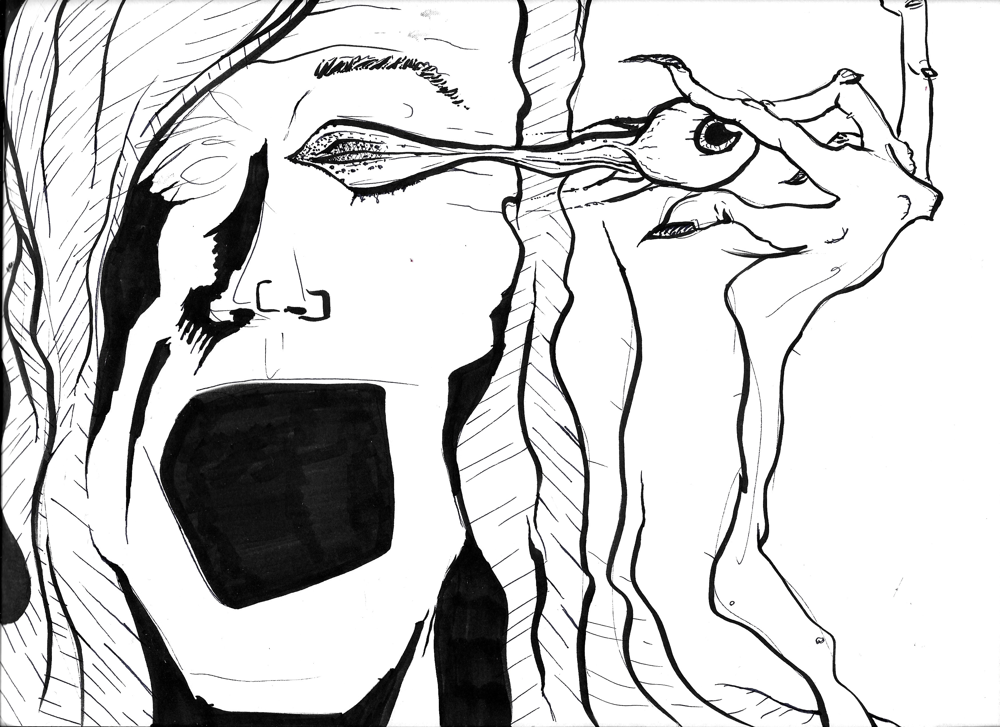
“It is good,” S/He said.

“Not that good,” Someone Else said.

God couldn’t hear the Someone Else, because s/he and all their new creation were inside a giant glass ball the size of a hundred thousand solar systems. Except that, of course, the glass ball wasn’t made of glass, and wasn’t in the shape of a ball. It was a far more complex shape that didn’t exist.

“It’s not bad,”
Someone Else concluded. “But I’ve seen better.”
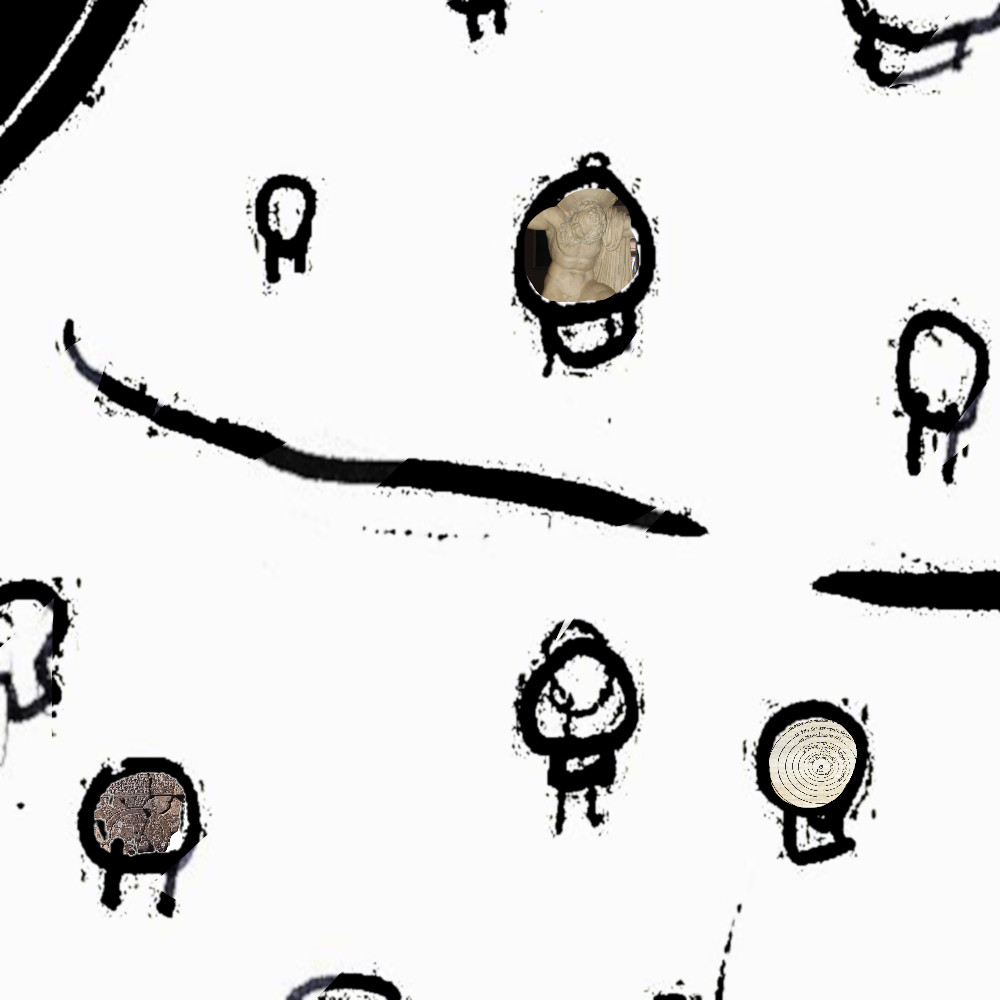
Someone Else concluded. “But I’ve seen better.”
It turned out that God -who was actually just another, slightly bigger, but still pretty small, god- and everything he had ever made was inside of a big glass ball that wasn’t a glass ball. And that glass ball sat on the shelf of God.
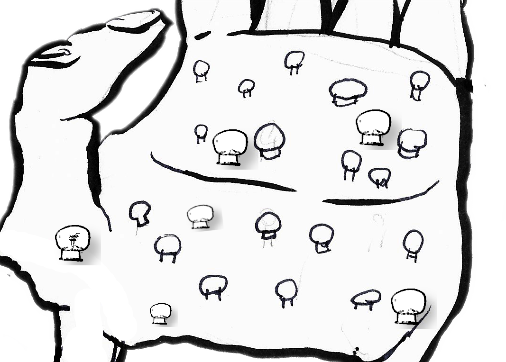
God stood up, a little bored with this, the newest of an infinite number of creations. God saw everything. He even saw the creation and destruction of the first god, though he didn’t pay much attention since the second god was covering it up, being slightly bigger than the first god.

The second god was slightly bigger than the first god from the real God’s perspective. But of course, he was infinitely bigger from his own perspective, when compared to the first god.
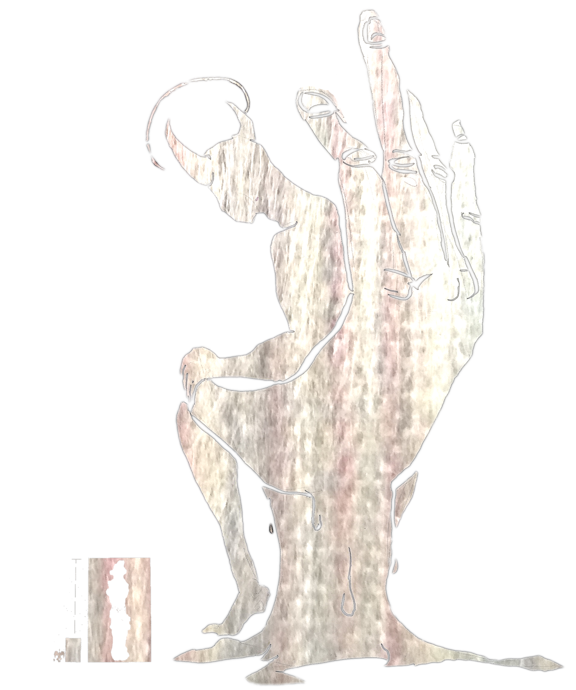
God yawned, and went out into the night to oversee his creation.
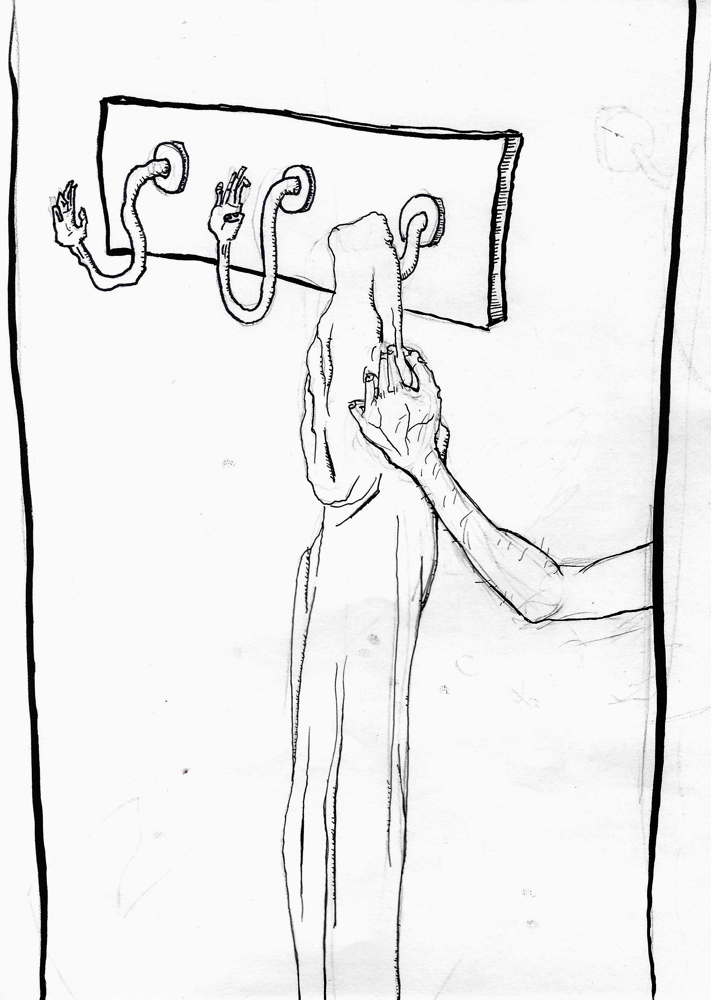
The
beginning
had longsince
past. He had createdeverything many eons ago,
and when it all turned out pretty well, he created other creators inside of snow-globes and crystal balls. They didn’t know that He was watching, and He rarely interfered with them.This recent reenactment had put Him in the mood to take another look at his own creations. He hadn’t inspected his original Earth in many years.
foot taking off of ground
For the sake of argument, we can say that God flew over to Earth, and walked on the ground, looking at all the things. Of course, in reality, God no more flew than a whisper leaps, or walked than an idea scurries, and it was all more of a mixture of ancient magic and vibrations. But for the sake of argument, and imagery, God walked.
landing on a planet, maybe scaling down to fit after looming over it, another original drawing
He landed in a meadow, near a grove of trees. It was dusk. There were no humans around, but if they had been, He would have been invisible regardless. God, in his perfect wisdom, knew this before He landed…and He had known that He would come to be here, and in such a time and such a way, since the beginning. And before the beginning He had also known, because He, Himself, had never began in the first place.
God knew every atom in this clearing like the back of his hand. Not only did He remember making them, they were him, just as much as his hand itself was. The bark of the trees, the clouds of the sky, the clover on the ground…all Him.

With His mind on such things, God bent down and ran his hand through the clover…with the same sensation of running it through his hair.


He ran it back and forth for a while, enjoying the feeling, and thinking.
Then his hand hit on something strange.
God’s fingers closed on something new. He plucked it out…

…it was a four leaf clover.
It felt like his hand was asleep, holding this something else in between his thumb and index finger. God knew everything He had done, would do, and was doing, and they were each the same thing.
But He hadn’t done this.
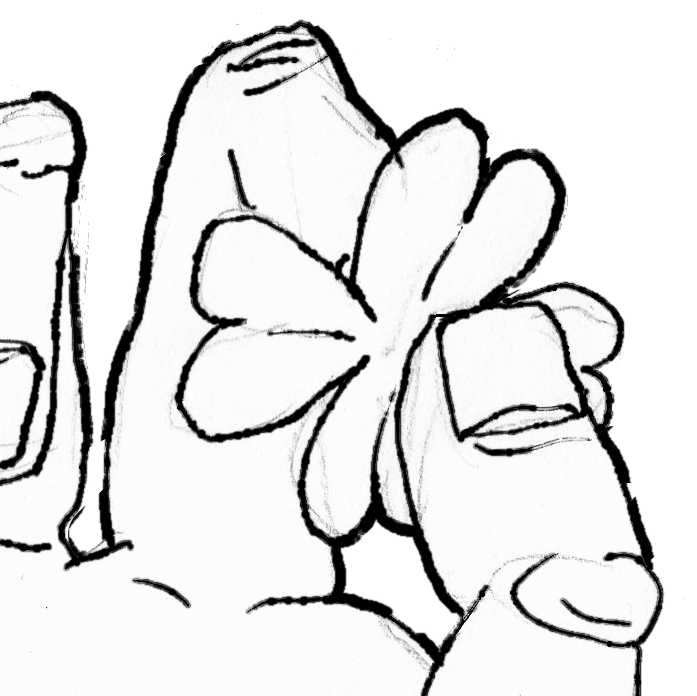
He hadn’t put this here. Not only was there not meant to be a four leaf clover here, at this time, but there was not meant to be one with this make-up of DNA, anywhere, ever.
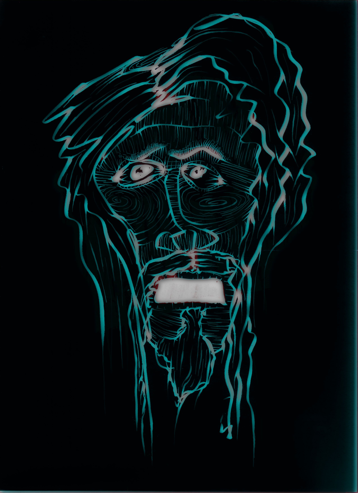

God threw the clover down, but even laying among its brethren it burned like a beacon in his mind, real in a different reality than anything else.
god threw his hood over his head, and fled, far away and into the darkest corners of space and time, forever looking over his shoulder for Whatever Else was out there.
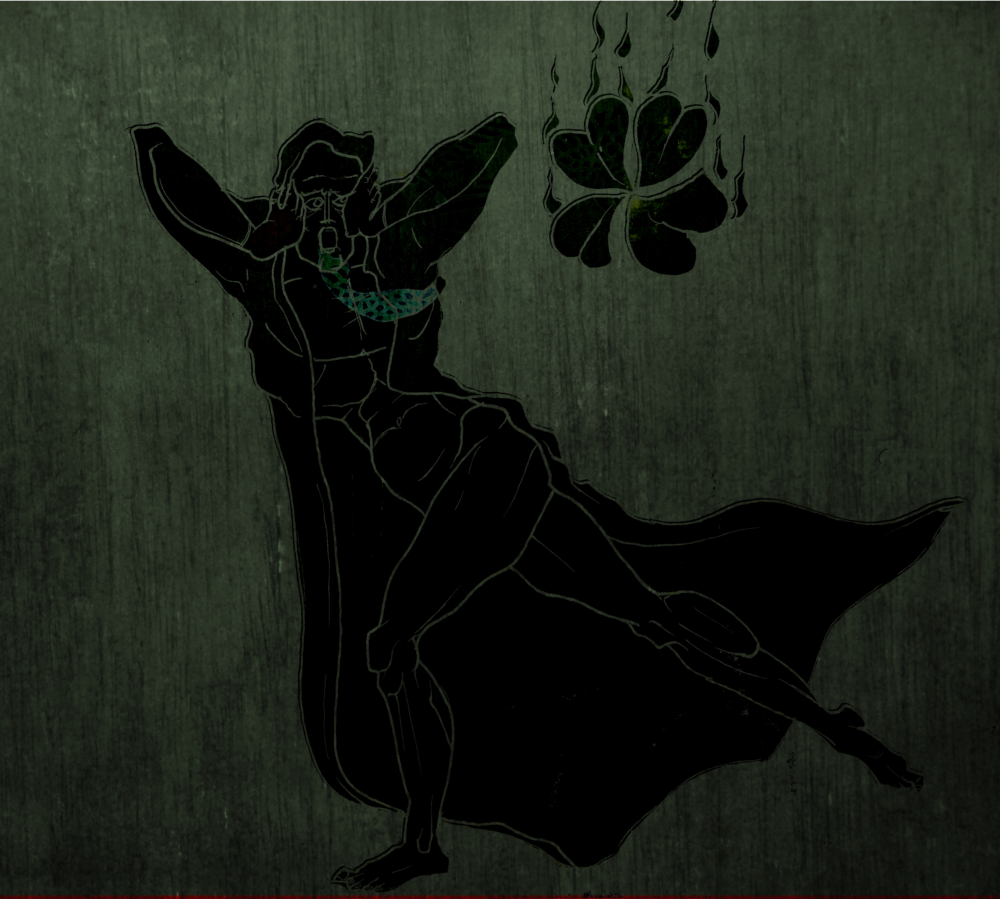